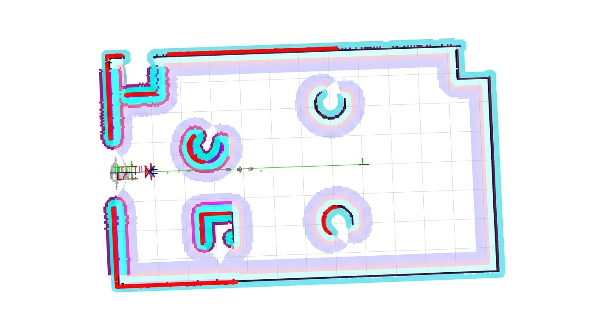
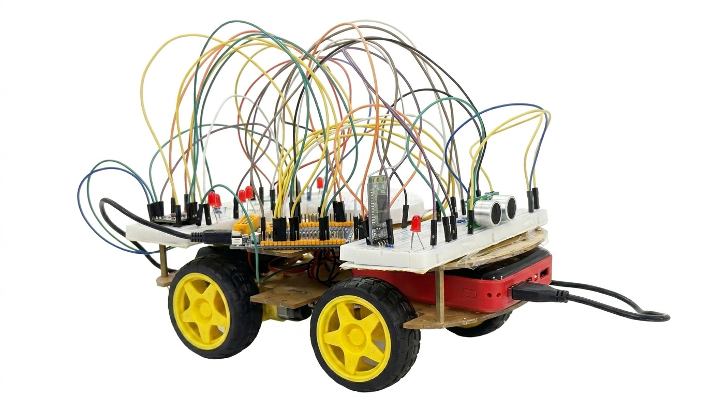
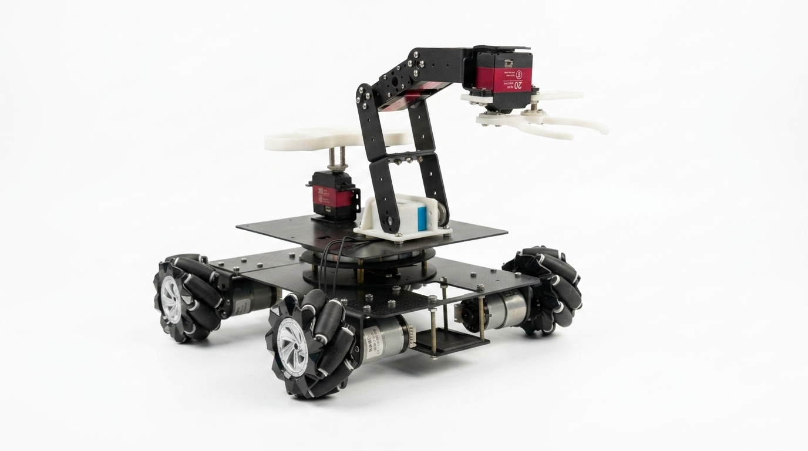

Motion planning & control
From discrete waypoints to smooth flight trajectories. Team leadership and primary implementation of a Minimum-Snap trajectory generator.
I work where intelligent algorithms meet physical machines.
From UAV trajectories and EEG signals to embedded controllers and mechanical joints, I connect software, control and hardware to make robotic systems work.
From a B.Eng. in Robotics Engineering at Chongqing University to graduate study in Garching, Germany.
Connecting disciplinesAlgorithms, control and hardwarePython and MATLAB for algorithms. STM32 for control. CAD and simulation for the mechanics.
Across languagesEnglish C1 · German C1 · Chinese nativeBased in Garching, Germany. Get in touch to discuss robotics, research or engineering opportunities.
Explore a project to bring it into focus. From algorithms to the systems they drive.
From discrete waypoints to smooth flight trajectories. Team leadership and primary implementation of a Minimum-Snap trajectory generator.

Making EEG features visible. Wavelet-packet feature extraction and visualization for a collaborative four-class motor-imagery classification workflow.

An integrated knee-joint drive, developed through motor selection, gearbox design, mechanical integration and structural and dynamic analysis.

Electrical integration and STM32 control development for an underwater robot, with remote-controlled movement and gripper operation tested in water.

LiDAR navigation and MoveIt manipulation with existing robot models. Target navigation and 6-DOF grasping tested in Gazebo and RViz.

Independently developed STM32 firmware for motor control, ultrasonic obstacle avoidance, Bluetooth commands and audio, validated on a physical robot.

OpenCV color and lane detection with motion-control logic. Project write-up in preparation.
I’m a Robotics Engineering graduate from Chongqing University, now studying Robotics, Cognition, Intelligence at the Technical University of Munich.
I enjoy the connections between disciplines: how a planner becomes a trackable trajectory, how a signal becomes a useful feature, and how software commands become physical movement.
My projects span machine learning, motion planning, embedded development and mechanical design. Industry internships have also given me experience with automation, robotic-arm design and engineering documentation.
Academic focus: robot learning and control, motion planning, machine learning and 3D computer vision.
Intelligent Robotics Track
Overall average: 86.36 / 100
Contributed to an automated loading and unloading system, including mechanical design and motion simulation of a robotic arm.
Supported electrical and PLC-related engineering tasks and technical documentation for supercritical fluid technology.
Practical skills developed through simulation, code and hands-on integration.
Path search, trajectory optimization, navigation and simulated manipulation.
MATLAB, ROS, MoveIt, Gazebo, RViz
EEG features, classification experiments and computer vision.
Python, PyTorch, scikit-learn, MNE, PyWavelets, OpenCV
Motor control, sensor interfaces, serial communication and physical testing.
C / C++, STM32, PWM, UART, Keil, STM32CubeMX
Drive integration, structural analysis, motion simulation and automation.
SolidWorks, Siemens NX, ANSYS, Adams, TIA Portal
For project discussions, research collaborations or engineering opportunities, I’d be happy to hear from you.